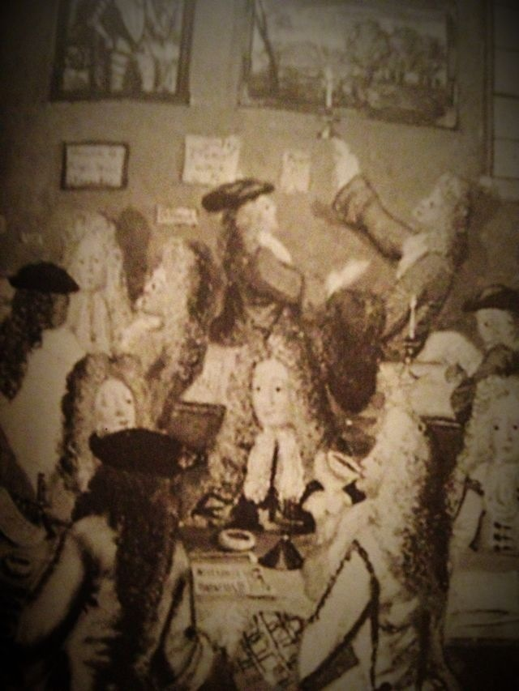

不能说咖啡是殖民产物吧。咖啡不是殖民时代几百上千年前穆斯林发明的么。咖啡是禁止喝酒的穆斯林的酒精啊。同样，茶更是殖民时代如此重要的产品，茶不仅间接造成了美国独立战争，也间接造成了第一次鸦片战争，但我们中国人喝茶这么多年了……@文茜小妹大:1700年伦敦拥有世界上最多咖啡馆约3000家，英国拥有殖民地种咖啡，因此廉价供应咖啡。咖啡=殖民产物，这是我无法否认的事实。但我如此酷爱咖啡，该如何看待这件事？我突然想起马桶，那也是殖民产物啊！尤其日本ToTo。于是，明天我决定照喝咖啡，正如我们不能没有马桶。图为1700年伦敦咖啡馆。 